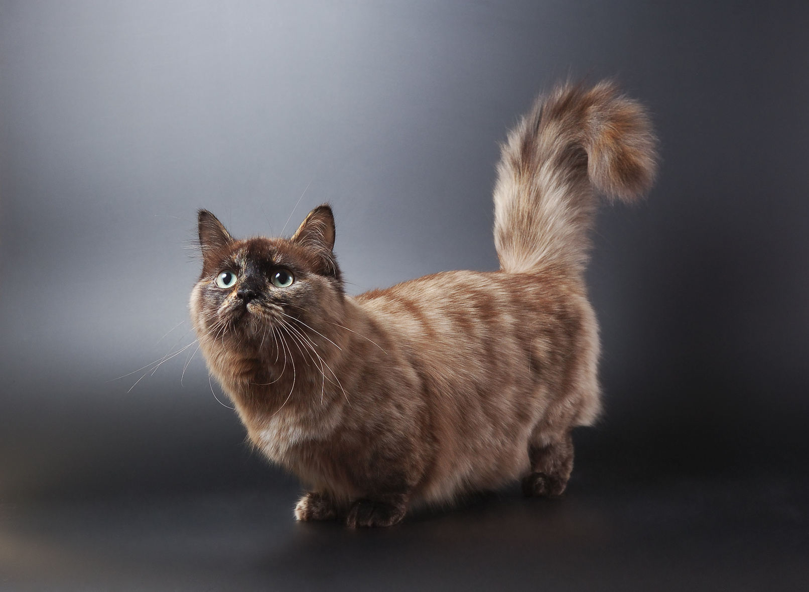

Trang Chủ
Giới thiệu
Sphynx
Người ta gọi mèo Sphynx là mèo Ai Cập không phải vì Sphynx có nguồn gốc từ mảnh đất sinh ra các Pharaoh mà bởi vì ngoại hình của nó...

Munchkin
Mèo Munchkin là giống mèo chân ngắn được Hiệp hội mèo thế giới (TICA) từ năm 1995...
British Shorthair
Những chú mèo Anh thuộc hai giống này đều sở hữu ngoại hình vô cùng dễ thương, vì thế được rất nhiều người yêu thích
Giới thiệu
Loài động vật đáng yêu và thân thuộc với mọi người lại có một lịch sử khá rắc rối và có phần bí ẩn